Three Days Grace: Легенда Канадской Альтернативы
Three Days Grace — это не просто группа, а живое доказательство того, что музыка может служить спасательным кругом. Основанная в 1992 году под вывеской Groundswell в маленьком городке Норвуд (население которого едва превышало 1300 человек), команда прошла путь от школьных гаражных репетиций до статуса мировых стадионных звезд. В их ДНК заложен сырой драйв гранжа Сиэтла и отточенная мелодика канадского радио-рока. Голос Адама Гонтье стал проводником для миллионов людей, борющихся с депрессией, а техническая мощь Нила Сандерсона и Брэда Уолста создала непоколебимый фундамент, который выдержал даже десятилетний уход фронтмена.
Действующие Лица: Монументальный Состав
Adam Gontier — вокал / гитара
Matt Walst — вокал
Neil Sanderson — ударные / бэк-вокал
Brad Walst — бас-гитара
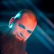
Barry Stock — соло-гитара
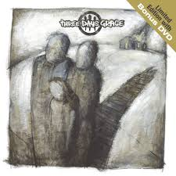
Начало 2000-х было временем перемен. Подписав контракт с Jive Records, группа столкнулась с давлением лейбла, который требовал хитов. Однако Адам и компания настояли на своем — они хотели звучать сыро. Сингл «I Hate Everything About You» был записан как демо, но лейбл был так поражен энергией, что выпустил его без изменений. Результат: первое место в чартах и мгновенная узнаваемость по всему миру.
Этот успех заложил стандарт пост-гранжа: чистый куплет, взрывной припева и текст, бьющий прямо в цель. Группа стала голосом тех, кто чувствовал себя аутсайдером в блестящем мире поп-музыки начала века.
Полная Дискография и Анализ
Three Days Grace (2003)
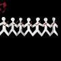
One-X (2006)
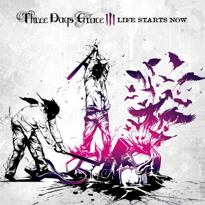
Life Starts Now (2009)
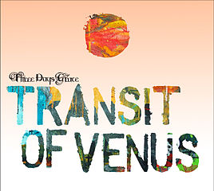
Transit of Venus (2012)
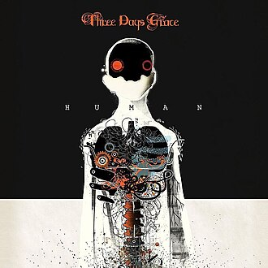
Human (2015)
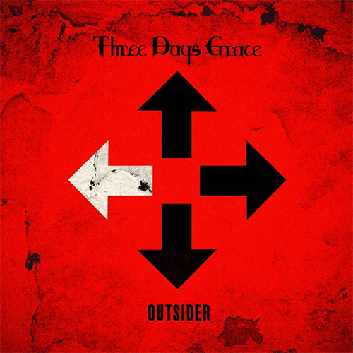
Outsider (2018)
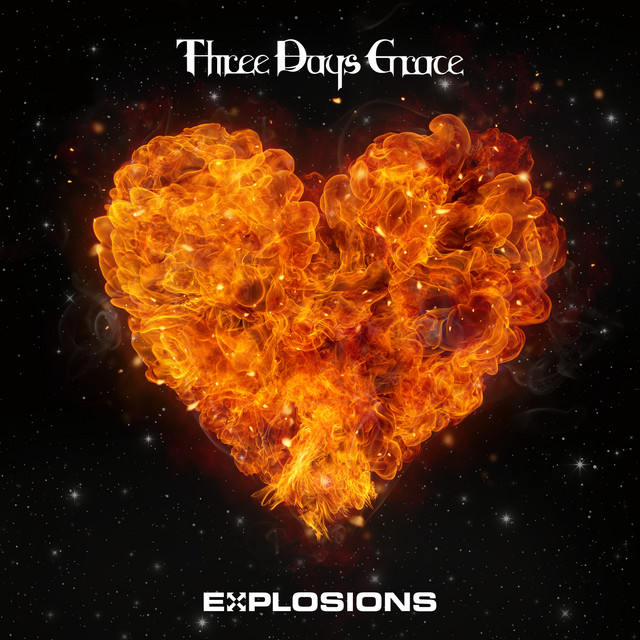
Explosions (2022)
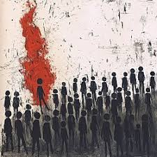
Alienation (2025)
Таймлайн: От Гаража до Зала Славы
Школьные друзья в Норвуде создают Groundswell. Группа играет на выпускных и в местных барах.
Переезд в Торонто. Адам, Нил и Брэд сокращают состав до трио и меняют название на Three Days Grace.
Мировой успех. Турне с Evanescence и Nickelback. Группа номинирована на премию Juno.
Релиз One-X. Группа дает более 200 концертов за год, становясь самой гастролирующей командой Канады.
Кризис. Уход Адама. Фанаты разделяются на два лагеря. Мэтт Уолст официально объявлен новым вокалистом.
Outsider получает премию 'Альбом года' в Канаде. Группа бьет рекорд Van Halen в чартах Billboard.
Октябрь: Официальный анонс возвращения Адама. Продажи билетов на тур 2025 года закрыты за 15 минут.
Нынешнее время. Группа готовит масштабное мировое шоу с использованием голограмм и 360-градусного звука.
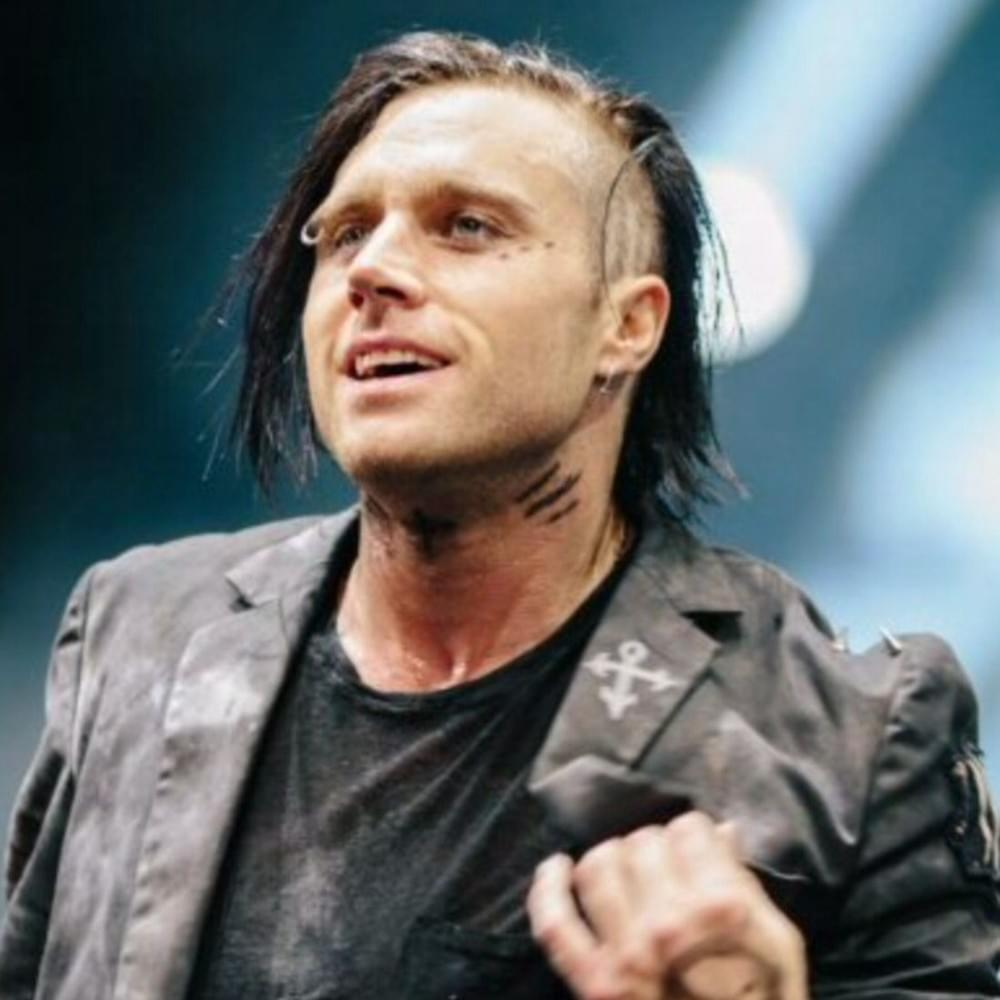
Эпоха Мэтта Уолста часто несправедливо недооценивается. Именно он сохранил группу в 2013-м. Мэтт привнес в TDG элементы стадионного рока и индустриальный блеск. Его вокал в песнях «I Am Machine» и «The Mountain» доказал, что Three Days Grace могут эволюционировать, не теряя своей сути.
Сегодня Мэтт говорит: «Я никогда не пытался быть Адамом. Я пытался быть братом, который подставил плечо». Эта честность позволила ему сохранить уважение фанатов и создать почву для уникального сотрудничества, которое мы видим сегодня.
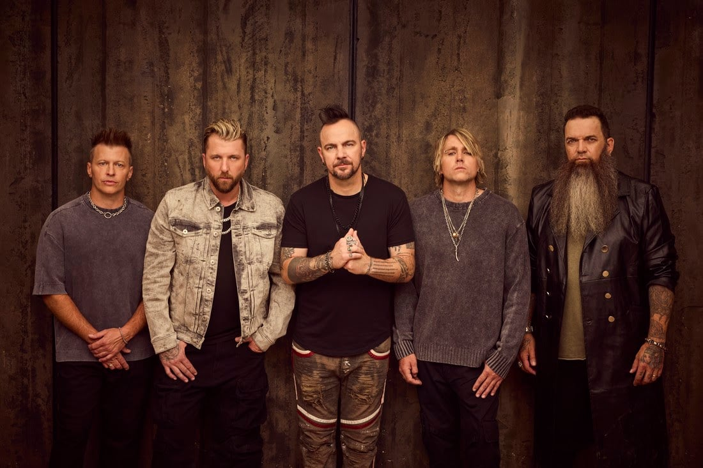
Воссоединение в 2024 году готовилось в строжайшем секрете. Нил Сандерсон признался в интервью 2026 года, что первые репетиции с двумя вокалистами проходили в подвале его дома, чтобы никто не узнал раньше времени. Музыканты хотели убедиться, что два голоса не будут мешать друг другу.
Результат превзошел ожидания. Голос Адама (низкий, надрывный) и голос Мэтта (высокий, чистый) создали эффект «стерео-вокала». В новой песне «Parallel Lives» они поют разные тексты одновременно, создавая ощущение диалога двух личностей внутри одного человека.